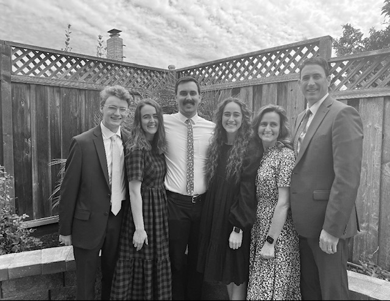

To get to know a little bit about me, I grew up in California, the San Francisco Bay Area. I love to swim, to go the beach and hang out with my friends. There is always something to do in San Francisco and I enjoy exploring the city and in being outdoors.
A favorite hobby of mine is finding art all over the city of San Francisco. Below are some links to my favorite places in the city where you can find beautiful art.
I also love to try new food and living in California, we have a diverse population. Which means we have some of the best food from all over the world in our city. I have linked some of my favorite restaurants below as well!
Lastly, this is my family. I have 2 brothers and 1 sister who all live in California. We enjoy going on vacation together and simply spending time as a family.